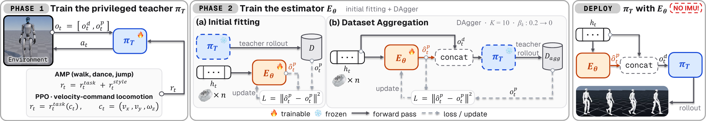

Abstract
Deploying a humanoid policy trained on privileged simulator states means inferring those states on hardware, where joint encoders and an IMU are the usual sensors. The IMU carries base orientation and angular velocity, but its signal drifts and is disturbed by foot-strike impacts. During stance, leg kinematics constrain base motion relative to the supporting feet, motivating learned prediction of inertial state from joint history. We therefore test whether encoder history alone suffices to recover a teacher's required states, the inertial components among them, without losing control performance.
We present JOSE (Joint-Only State Estimator), a recurrent estimator that maps a window of joint-encoder history to the teacher's privileged state, the orientation and angular velocity normally read from an IMU included, and hands it to a frozen teacher that acts with no IMU in the control loop. Training uses simulator-state regression with dataset aggregation. On three motion-tracking teachers trained with Adversarial Motion Priors and one command-conditioned locomotion teacher, driving the frozen teacher with JOSE halves the motion error of joint-only action distillation and tracks locomotion commands nearly as well as ground-truth observations. Reconstructing the inertial state rather than reading it leaves control unaffected by IMU noise, though encoder noise still degrades it without noise-aware training.
Teacher GT vs. Teacher + JOSE
Left: the teacher acting on ground-truth (GT) privileged state from the simulator. Right: the same frozen teacher acting on JOSE's estimate from joint-encoder history alone, with no IMU in the control loop. Orientation and angular velocity are never read from an inertial sensor. Both halves play in lockstep from the same seed.
Method

Phase 1: Teacher
A teacher policy is trained on joint encoders plus privileged state: base linear velocity, angular velocity and projected gravity.
Phase 2(a): Initial fitting
The teacher is frozen. JOSE, a 2-layer LSTM over a 25-step window of all 29 joints, learns to regress the privileged state from encoder history.
Phase 2(b): DAgger
The teacher runs on JOSE's estimate. Visited states are labelled with simulator ground truth, aggregated and refit over 10 rounds.
Deployment
JOSE turns encoder history into the privileged state, and the frozen teacher acts on it. No IMU is read.